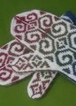

|
||
Premium Patterns Wintry Mix Mitts Love Bytes HawkeyeFree Patterns Kiddie Cadet Summerlin Ruffled Scarf Seamless DS Sock Simply Seamless Pouch Myriads of MushroomsExtras DIY Mitten Blocker Felt Patch Tutorial Yarn Dyeing Tutorial Needle Pouches Knitting Journal |
April 08, 2008 - Posted by Alice SchneblyHey diddle diddle...Project Specs Well, my Fiddleheads are finished! I have to say these mittens have really grown on me since they first came off the needles. I haven’t been able to resist slipping them on my hands whenever I get the chance… even though it’s been 70 degrees out the last few days. I still can’t say the colors are totally me. I’ve been toying with other color combinations in my mind. There are so many great ones that I’ve seen, and the possibilities are really endless. I’ve also been dreaming of a pair knit in Blue Sky Alpaca Sportweight. I have some of it on hand and I can’t help but fondle it and think of pretty mittens. I think dreaming of other colors is part of the reason why I stalled after that first mitten. I seriously had knit a million different pairs of Fiddleheads in my head, and I was kind of over the ones I was working on already. I definitely had a little bit of Second Mitten Syndrome. The first mitten knit up so fast I really expected these to take only two or three days to complete. After knitting the first, I decided to try to fit a lining in. I spent a whole day working on the lining, ripping it out, making it shorter, re-knitting it, trying different decreases… and on and on. I tried everything I could to try to get a comfortable lining in there but because my mittens were knit at a smaller gauge it just seemed that nothing was working for the lining. After that I hesitated to cast on for my second mitten. Having lots of encouragement from Jen really helped motivate me and pushed me through that second mitten. We knit our second mittens at the exact same time, and we were always checking to see who was farther along. A little friendly competition never hurts, right? Without the lining, these mittens aren’t super heavy duty. I still think they’re suitable for everything except extremely cold temperatures. My mittens are knit at a gauge of 30st/4”, and they perfectly fit my hands that measure 8” around the palm. I think when I make the pattern again I’ll knit them at this same gauge and once again omit the lining. The only thing I might do differently next time is knit the i-cord cast on using a size smaller needles to combat any curling at the cuff edge. Still, the cuffs seem to be behaving quite well after blocking so I don’t know if it’s totally necessary. One other minor change I made to these mittens was starting the decreases for the thumb one row earlier, and knitting the thumbs for one less round. It just fit the length of my thumbs a little better. I definitely think that this pattern would be suitable for colorwork beginners. Because the chart is mirrored, I found it quite intuitive to knit and I didn’t have to constantly check my chart during each row. Another big plus is I barely used any of my contrast colors! I have a huge amount of leftovers of my Ultra Alpaca Light. I really enjoyed knitting with this yarn and wouldn’t hesitate to use it again for Fiddleheads or in other mitten patterns. After knitting these mittens I totally have colorwork on my mind. I’ve got so many gorgeous patterns queued already. In fact, three stranded mittens I’m planning on making in the near future are also designed by Adrian—the Entomology Mittens, Double-Thick Mittens, and Norwegian Snail Mittens. She really is a genius when it comes to mittens! |
   Recent ReviewsRecent Posts
 Our Favorites
|
| © 2007 KathrynIvy.com | ||
{kind=link}
{kind=link}